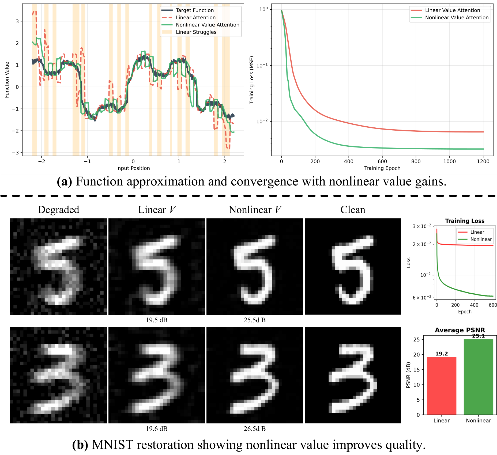
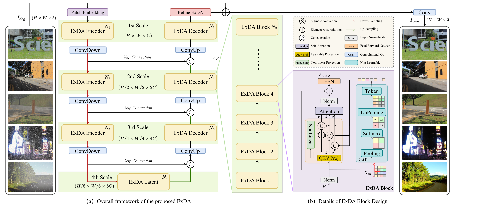
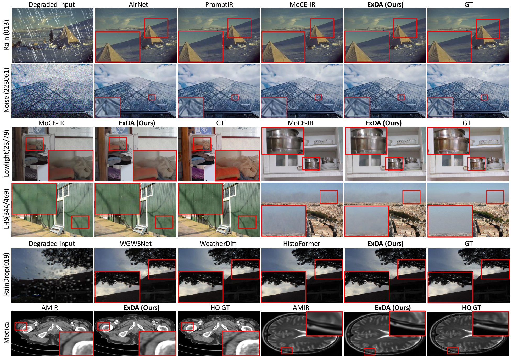

Core Idea
Add nonlinear value transform + global token to attention.
Target
Robust all-in-one restoration under mixed, unknown degradations.
Outcome
Consistent visual gains across synthetic, weather, underwater, and medical settings.
All-in-one image restoration (IR) aims to recover high-quality images from diverse degradations, which in real-world settings are often mixed and unknown. Unlike single-task IR, this problem requires a model to approximate a family of heterogeneous inverse functions, making it fundamentally more challenging and practically important. Although recent focus has shifted toward large multimodal models, their robustness still depends on faithful low-level inputs, and the principles that govern effective restoration remain underexplored. We revisit attention mechanisms through the lens of all-in-one IR and identify two overlooked bottlenecks in widely adopted Restormer-style backbones: (i) the value path remains purely linear, restricting outputs to the span of inputs and weakening expressivity, and (ii) the absence of an explicit global slot prevents attention from encoding degradation context. To address these issues, we propose two minimal, backbone-agnostic primitives: a nonlinear value transform that upgrades attention from a selector to a selector-transformer, and a global spatial token that provides an explicit degradation-aware slot. Together, these additions improve restoration across synthetic, mixed, underwater, and medical benchmarks, with negligible overhead and consistent performance gains. Analyses with foundation model embeddings, spectral statistics, and separability measures further clarify their roles, positioning our study as a step toward rethinking attention primitives for robust all-in-one IR.



All-in-one restoration benchmarks. Comparisons against representative all-in-one architectures and strong task-specific baselines across dehazing, denoising, deraining, low-light enhancement, motion blur, and adverse weather. ExDA generally restores finer details and reduces artifacts (see zoomed patches).

LHR / LHS settings. Under harder, mixed or long-tail degradations, ExDA keeps edges crisp and textures coherent, improving perceptual quality while tracking the ground truth appearance more closely.

All-in-one comparisons with AirNet / PromptIR / MoCE-IR. ExDA avoids under-restoration and suppresses residual noise or streaking artifacts, especially in high-frequency regions.

Adverse weather (dehaze/derain/desnow). ExDA better recovers scene contrast and structure, with fewer color shifts and less haloing than prior methods.

WeatherBench-style conditions. ExDA improves visibility and texture fidelity for rain/snow-related corruptions, maintaining natural tones and reducing blotchy artifacts in flat regions.

Additional adverse weather comparisons. ExDA shows clearer boundaries and more stable global illumination, particularly in challenging low-contrast areas highlighted by red boxes.

Medical imaging (MRI/CT/PET). ExDA improves anatomical edge definition and suppresses noise while preserving clinically relevant contrast. Left-to-right comparisons follow the panel labels in the figure (LQ/AMIR/ExDA/HQ or GT).
@inproceedings{ren2026exda,
title = {ExDA: Rethinking Expressivity and Degradation-Awareness in Attention for All-in-One Blind Image Restoration},
author = {Bin Ren and Runyi Yang and Qi Ma and Xu Zheng and Mengyuan Liu and Danda Pani Paudel and Luc Van Gool and Rita Cucchiara and Nicu Sebe},
booktitle = {International Conference on Learning Representations (ICLR)},
year = {2026},
url = {https://openreview.net/forum?id=IBzmQVia88}
}Tip: Click Copy to copy BibTeX.